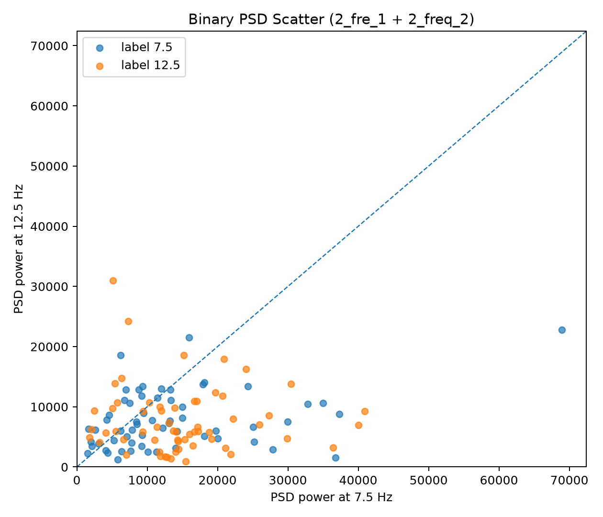
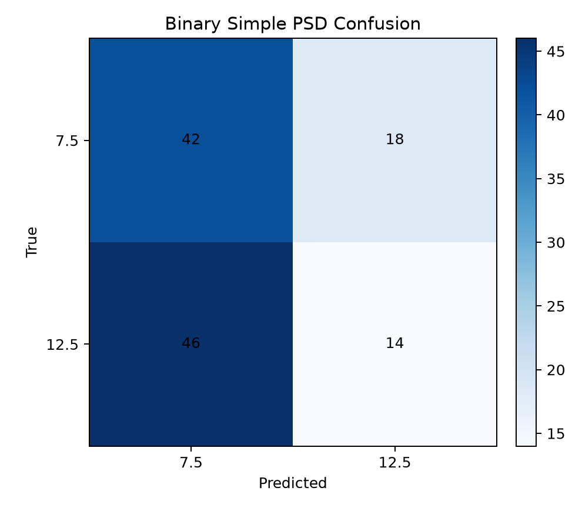
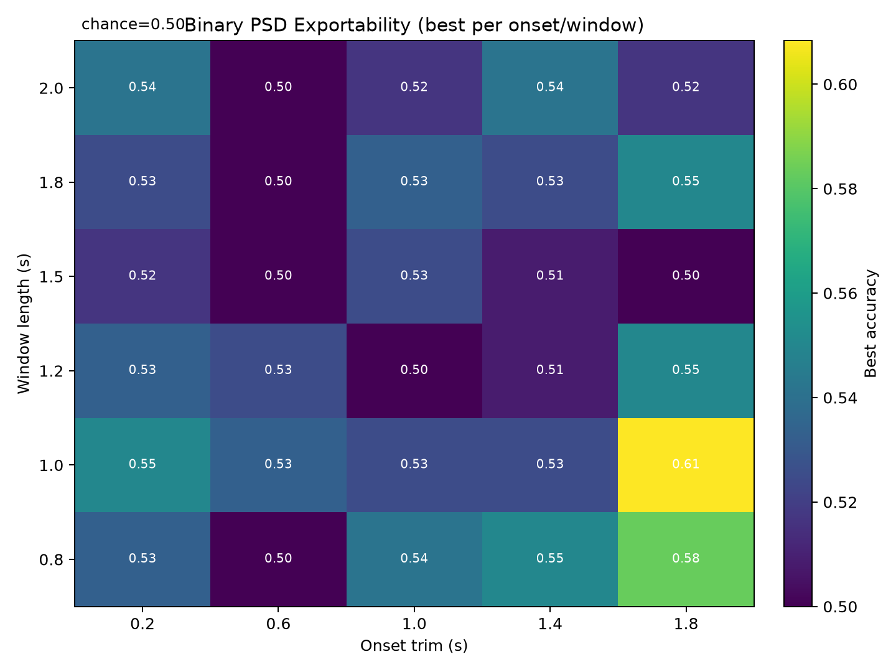
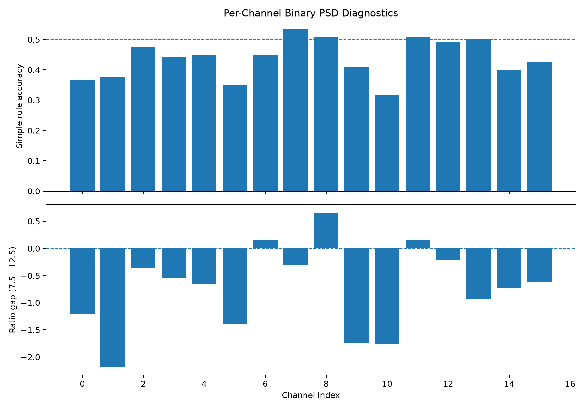
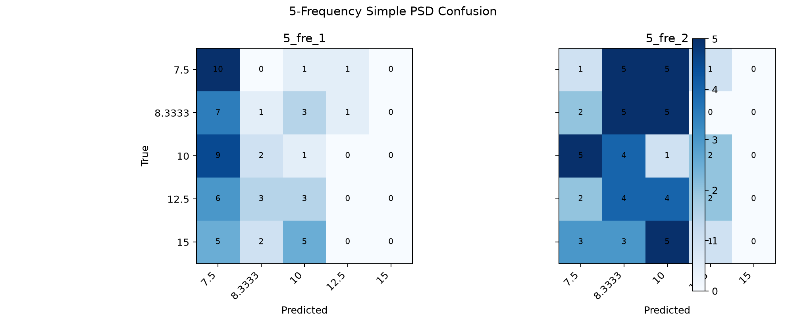
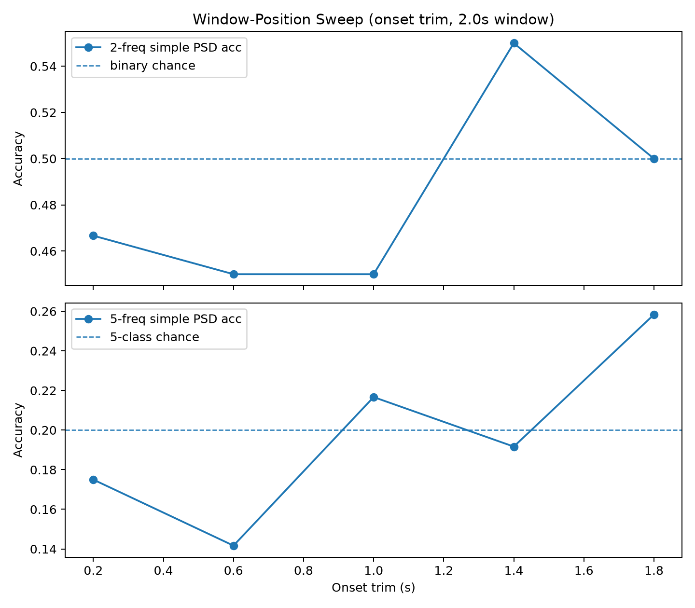
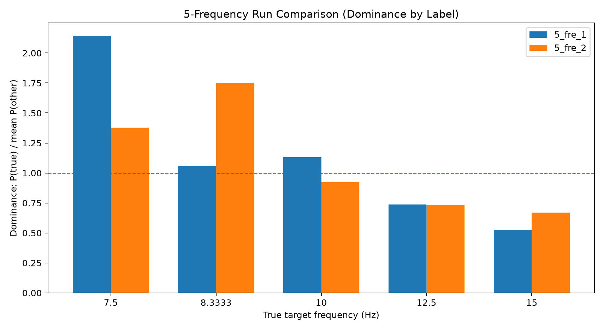
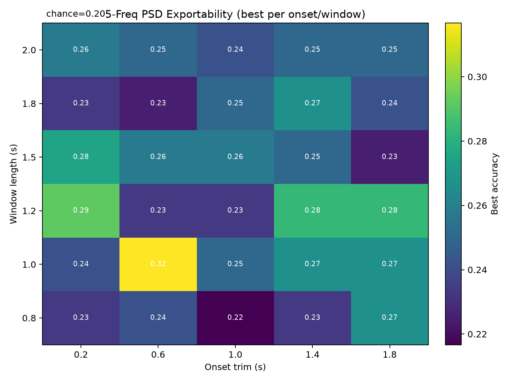

End-to-end signal pipeline built from scratch in Python: live 16-channel acquisition, OpenBCI-style visualization, SSVEP stimulus delivery, and EEGNet-powered online decoding.
Electroencephalography (EEG) measures the brain's electrical activity at the scalp. This platform captures those signals in real time, processes them through a neuroscience-aligned pipeline, and uses a deep-learning model to classify the user's neural state — all with sub-100 ms latency on consumer hardware.
BrainFlow drives the OpenBCI Cyton+Daisy board over serial. A pub-sub bus fans out 16-sample chunks to independent GUI, recorder, and decoder consumers simultaneously.
Steady-State Visual Evoked Potentials: the brain entrains to a flickering visual stimulus at a specific frequency. This paradigm enables hands-free, high-bandwidth BCI control.
A compact depthwise-separable CNN (EEGNet) runs inference on rolling 2-second windows with a 16-sample stride. The manifest-driven runtime supports hot-swappable model versions.
Live 16-channel time series, log-scale FFT spectrum, OpenBCI-style scalp head plot with diffusion interpolation, and per-band power histograms (δ/θ/α/β/γ).
Automated PSD separability analysis, window-length sweep, per-channel SNR checks, and cross-session exportability scoring before any model goes live.
Record → validate → train EEGNet → offline replay gate → live inference.
Each model ships a versioned manifest.json that fully specifies its
preprocessing, window, and class labels.
Every layer is decoupled. The acquisition thread never knows about the GUI. The decoder never touches the recorder. Each subsystem evolves independently; a slow decoder never blocks the display, and a crashed recorder doesn't affect inference.
GUI, recorder, and decoder subscribe independently. No consumer ever blocks another.
Each queue has a configurable max size. Stale frames are dropped rather than building backpressure — latency stays bounded.
One manifest.json per model encodes window, stride, channels, preprocessing, and class labels. Swap models without touching application code.
16-channel EEG, FFT spectrum, scalp head plot, and SSVEP stimulus panel.
drop demo.mp4 into docs/ to activate
Scrolling 6 s window, auto-scale. 22 s ring buffer. Bandpass + notch + CAR applied in real time.
Log-scale Y, 0.1–60 Hz, updated at 40 ms. Resolves SSVEP harmonics clearly.
Diffusion-interpolated intensity across 16-electrode montage. Polarity contours show spatial distribution.
4×4 grid of δ/θ/α/β/γ bars across all 16 channels, on an independent spectral clock.
Fullscreen participant view, frame-locked flickering stimuli. Configurable frequencies, trial count, randomization. Writes timestamped markers.
EEGNet runs on a background thread. Predicted label, confidence, and inference count streamed to status bar.
Every model must pass an offline validation gate before it can run in live mode. This prevents overfitted or incorrectly preprocessed models from ever touching real-time data.
GUI + SSVEP panel. Writes raw_frames.csv, metadata.json, timestamped ssvep_markers.jsonl.
PSD separability. Per-channel SNR. Window-length sweep. Cross-session exportability.
Marker-aligned trial extraction. Onset trimming, bandpass + notch applied offline.
Depthwise CNN. 120 epochs, early stopping, 80/20 session split. Outputs model.keras + manifest.json.
Offline replay through decoder runtime using saved recording. Verifies preprocessing parity.
--decoder-manifest + --deployment-mode live. Preflight enforced at startup.
Single-participant pilot dataset (n=120 trials per paradigm). Goal: validate the signal pipeline and preprocessing choices. PSD-based probes show above-chance separability even on limited data.

Trial-level 7.5 vs 12.5 Hz power across channels.

PSD-based classification: 7.5 vs 12.5 Hz.

Grid search over onset trim / window for separability score.

SSVEP response strength across the 16-electrode montage.

5-class PSD classification. 20% chance level.

Separability vs trial window duration. Informs 2 s EEGNet input.

Per-label PSD dominance ratio across two recording sessions.

Frequency-pair exportability across preprocessing configurations.
No framework overhead — just the right libraries for each layer.
Streaming, GUI, preprocessing, training, validation, and decoder runtime — all on GitHub.